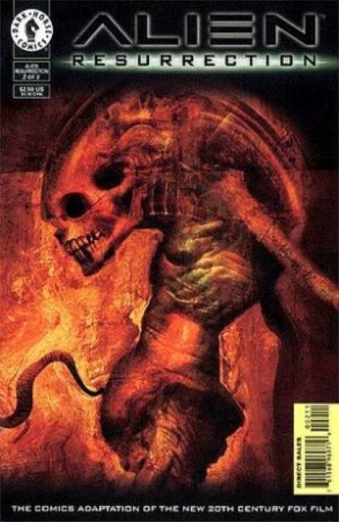
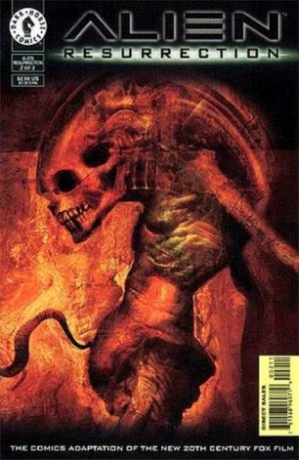
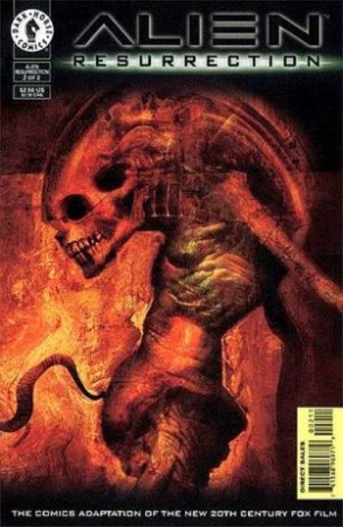

Alien Resurrection is a 1997 American science-fiction action horror film directed by Jean-Pierre Jeunet, written by Joss Whedon, and starring Sigourney Weaver and Winona Ryder. It is the fourth installment in the Alien film series, and the final installment in the original series. It was filmed at the 20th Century Fox studios in Los Angeles, California.
Set 200 years after the preceding installment Alien 3 (1992), Ellen Ripley is cloned and an Alien queen (Tom Woodruff Jr.) is surgically removed from her body. The United Systems Military hopes to breed Aliens to study and research on the spaceship USM Auriga, using human hosts kidnapped and delivered to them by a group of mercenaries.
The Aliens escape their enclosures, while Ripley and the mercenaries attempt to escape and destroy the Auriga before it reaches its destination: Earth. Additional roles are played by Ron Perlman, Dan Hedaya, J. E. Freeman, Brad Dourif, and Michael Wincott.
The Comic:

Illustrator: Eduardo Risso, Writer: Jim Vance
Two hundred years ago, Ellen Ripley died in a blazing inferno. But the government has need of her again. So they've rebuilt her. And now she's going to be tested against a hive of Aliens.
As horrific as the Aliens are, nothing will prepare you for the newest Alien hybrid... and the truth about the reappearance of Ripley!